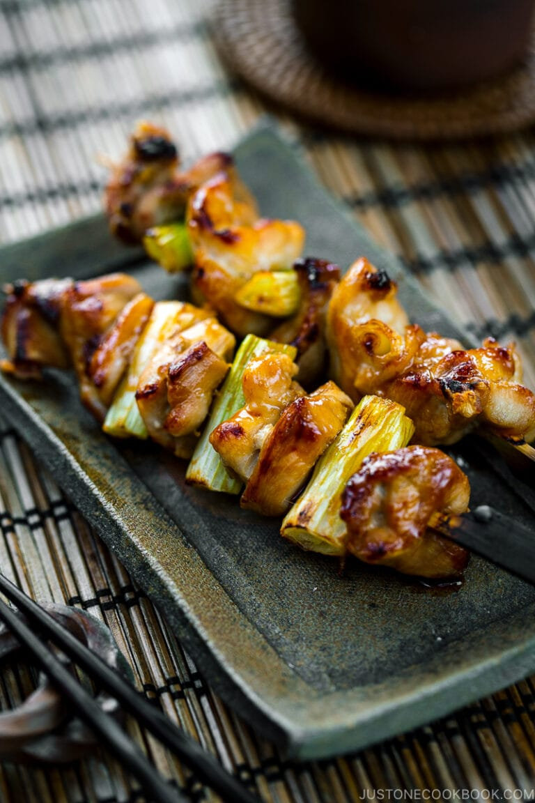

Yakitori 焼き鳥
Glazed in a homemade Yakitori Sauce, these Japanese Grilled Chicken and Scallion Skewers are hard to resist! You’ll love this simple Yakitori recipe with an easy savory-sweet sauce that you can make ahead. It’s great for grilling outdoors or under the broiler.

When comes to chicken on a stick, the Japanese have their own best version known as Yakitori (焼き鳥). The name translates directly to grilled chicken, but Yakitori also exemplifies good times and happy hours in Japan.
These chicken skewers are a classic food served at izakaya, Japanese-tapas style pubs, where frosty beer, tasty bites, and jolly chatters are all part of the deal. They are also the kind of iconic food you can find at specialty restaurants that serve nothing else but Yakitori.
The good news is that anyone can easily make some really great-tasting yakitori at home. Let me show you how!
Ingredients
- 1 lb boneless, skinless chicken thighs
- 9 green onions
- oil
For the Yakitori Sauce (Tare)
- 1/2 cup soy sauce
- 1/2 cup mirin
- 1/4 cup sake
- 1/4 cup water
- 2 tsp brown sugar
Steps
To Make The Yakitori Sauce (Tare)
- In a small saucepan, add the mirin, soy sauce, sake, water, brown sugar, and the green part of one scallion. Bring it to a boil over high heat. Once boiling, reduce the heat to low and simmer, uncovered, until reduced to one-third of the original volume. It will take about 30 minutes. Let it cool to room temperature before using. The sauce will thicken with a glossy shine as it cools. Note: You can make the sauce ahead of time. Put only the sauce (without the green onion) in a mason jar. Store in the refrigerator for up to 2-3 months.
- Reserve one-third of the sauce in a small bowl for final coating, just before serving. Use this reserved sauce with a clean brush only after the chicken is cooked to prevent cross contamination.
To Prepare/Assemble the Yakitori
- Cut the white and light green parts of the remaining scallions into 1-inch (2.5 cm) pieces.
- Cut the chicken into 1-inch (2.5 cm) cubes.
- On a flat work surface, fold each slice of chicken in half, insert a bamboo skewer into the chicken at a 45-degree angle, and press down on the skewer to pierce the meat through the center.
- Next, add a piece of scallion perpendicular to the skewer. Continue to alternate chicken slices with pieces of scallion, ending with a piece of chicken. Each 5-inch skewer will hold about 4 chicken slices and 3 scallion pieces.
To Grill/Broil the Yakitori
- Grease the grate of the broiler/wire rack (or oven-safe cooling rack) to keep the chicken from sticking to the grate. Place the skewers on top.
- Set the broiler to High and wait until the heating elements are hot. Then, place the skewers under the broiler. Broil for 6 minutes.
- After 6 minutes, brush the meat on both sides with the Yakitori Sauce. Continue to broil for 3-4 minutes to caramelize the sauce.
To Serve
- Remove the skewers to a serving plate. With a clean brush, baste the top of the chicken skewers with the reserved sauce. Tip: If you accidentally cross contaminate (dip the same brush you used on the uncooked chicken during cooking), you will have to boil the sauce again. Serve and enjoy!